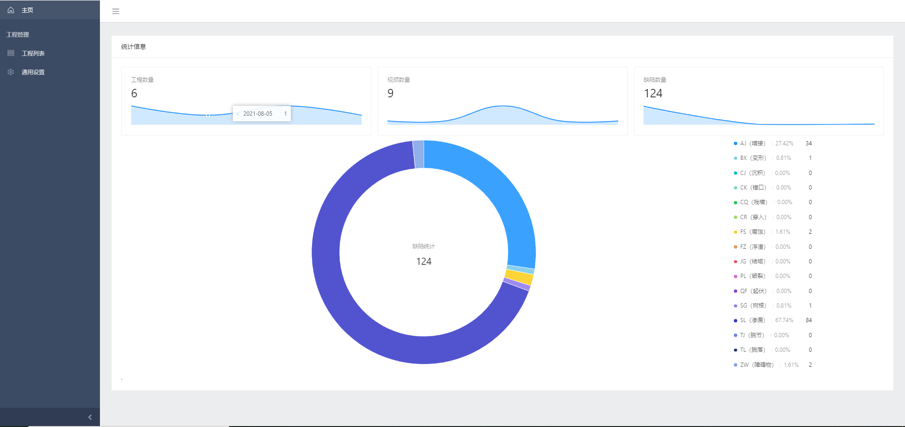

Hosted on GitHub Pages — Theme by orderedlist
I am currently a master student of computer science at the Tianjin University.
My research interests include machine learning, 3D vision, image processing, and image recognition.
Master Student
Department of Computer Science and Technology, Tianjin University
Sep 2020 - Now
Bachelor Degree of Engineering
Department of Software Engineering, Tianjin University
Sep 2016 - Jun 2020
Microsoft
Software Engineer Intern
Summer/2022
China Automotive Technology and Research Center
Research Intern
Summer/2019
Structure-aware dehazing of sewer inspection images based on monocular depth cues
2021 - Jan 2022
paper
code
During automated inspection of sewers, hazy sewer images affects the performance of succeed vision tasks. The main challenge for either depth estimation or image dehazing is steep depth change and extensive similar texture regions in the sewer image.
by works in camera calibration, autonomous driving and semantic line detection, this project aims to provide a sewer dataset including clean sewer images and sewer depth maps, and then propose a dehazing network specially for sewer images. As for depth estimation, camera calibration and monocular cues (e.g. two water–pipewall borderlines, a vanishing point) were used to calculate depth contours and generate depth maps. Then depth maps and original clean images were combined by atmospheric scattering model to synthesize various hazy images. As for image dehazing, a structure-aware non-local network (SANL-Net) was designed to leverages high-level semantic information and low-level spatial information, including three parts: a Semantic Net predicting two water borderlines, a Spatial Net calculating the residual map, and a structure-aware non-local network (SANL) module fusing features between two subnetworks.
SANL-Net showed its superiority over other state-of-the-art methods with 147 in mean square error (MSE), 27.28 in peak signal to noise ratio (PSNR), 0.8963 in structural similarity index measure (SSIM), and 15.47M in parameters. And with processing by this network, real hazy sewer images also obtained higher recall and precision in deficit detection, which demonstrates effectiveness of depth estimation and image dehazing both.
Domain-adaptive object detection with dehazing module
May 2022 - Now
Most popular object localization algorithms perform terribly in hazy scenes. To solve this problem, there are two main bottlenecks: image enhancement simply optimized by existing metrics (e.g. PSNR, SSIM) could hardly guarantee definitely-improved localization results, and fixed processing pipeline could not work both in hazy and clean scenes.
So this work proposes a DefogDA-FasterRCNN network, comprising of a dehaze net, a Faster-RCNN and a domain-adaptation module. Trained Faster-RCNN participated in training the dehazing net, optimizing image quality and localization precision meanwhile. Domain-adaptation module utilized instance-level and pixel-level domain classifier to implement consistency regularization, generalizing the model to both hazy and clean scenes.
DefogDA-FasterRCNN gained strong performance on two kinds of datasets (CitySpace and Foggy CitySpace) meanwhile, and achieved higher mAP (49.51% on CitySpace and 41.01% on Foggy CitySpace) than other methods.
A software for automatic defect detection in sewers
Feb 2022 - Jul 2022
video
